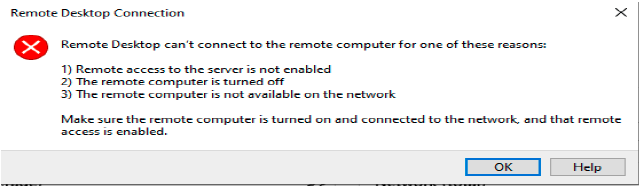

Lab 9: Secure network traffic (10 min)
In this Lab, we will configure a network security group.
Task 1: Create a virtual machine
In this task, we will create a Windows Server 2019 Datacenter virtual machine.
1 - Sign-in to the Azure Portal.
2 - From the All services blade, search for and select Virtual machines, and then click + Add, + Create, + New Virtual Machine.
3 - On the Basics tab, fill in the following information (leave the defaults for everything else):
| Setting | Value |
|---|---|
| Subscription | Use default provided |
| Resource group | Create new resource group |
| Virtual machine name | SimpleWinVM |
| Region | (US) East US |
| Image | Windows Server 2019 Datacenter Gen 2 |
| Size | Standard D2s v3 |
| Administrator account username | azureuser |
| Administrator account password | Pa$$w0rd1234 |
| Inbound port rules | None |
4 - Switch to the Networking tab, and configure the following setting:
| Setting | Value |
|---|---|
| NIC network security group | None |
5 - Switch to the Management tab, and in its Monitoring section, select the following setting:
| Setting | Valus |
|---|---|
| Boot diagnostics | Disable |
6 - Leave the remaining defaults and then click the Review + Create button at the bottom of the page.
7 - Once Validation is passed click the Create button. It can take about five minutes to deploy the virtual machine.
8 - Monitor the deployment. It may take a few minutes for the resource group and virtual machine to be created.
9 - From the deployment blade or from the Notification area, click Go to resource.
10 - On the SimpleWinVM virtual machine blade, click Networking, review the Inbound port rules tab, and note that there is no network security group associated with the network interface of the virtual machine or the subnet to which the network interface is attached.
Note: Identify the name of the network interface. You will need it in the next task.
Task 2: Create a network security group
In this task, we will create a network security group and associate it with the network interface.
1 - From the All services blade, search for and select Network security groups and then click + Add, + Create, + New.
2 - On the Basics tab of the Create network security group blade, specify the following settings:
| Setting | Value |
|---|---|
| Subscription | Use default subscription |
| Resource group | Select default from drop down |
| Name | myNSGSecure |
| Region | (US) East US |
3 - Click Review + Create and then after the validation click Create.
4 - After the NSG is created, click Go to resource.
5 - Under Settings, click Network interfaces and then Associate.
6 - Select the network interface you identified in the previous task.
Task 3: Configure an inbound security port rule to allow RDP
In this task, we will allow RDP traffic to the virtual machine by configuring an inbound security port rule.
1 - In the Azure portal, navigate to the blade of the SimpleWinVM virtual machine.
2 - On the Overview pane, click Connect.
3 - Attempt to connect to the virtual machine by selecting RDP, downloading and running the RDP file. By default the network security group does not allow RDP. Close the error window.

4 - On the virtual machine blade, scroll down to the Settings section, click on Networking, and notice the inbound rules for the myNSGSecure (attached to network interface: myVMNic) network security group denies all inbound traffic except traffic within the virtual network and load balancer probes.
5 - On the Inbound port rules tab, click Add inbound port rule. Click Add when you are done.
| Setting | Value |
|---|---|
| Source | Any |
| Source port ranges | * |
| Destination | Any |
| Destination port ranges | 3389 |
| Protocol | TCP |
| Action | Allow |
| Priority | 300 |
| Name | AllowRDP |
6 - Select Add and wait for the rule to be provisioned and then try again to RDP into the virtual machine by going back to Connect This time you should be successful. Remember the user is azureuser and the password is Pa$$w0rd1234.
Task 4: Configure an outbound security port rule to deny Internet access
In this task, we will create a NSG outbound port rule that will deny Internet access and then test to ensure the rule is working.
1 - Continue in your virtual machine RDP session.
2 - After the machine starts, open an Internet Explorer browser.
3 - Verify that you can access https://www.bing.com and then close Internet Explorer. You will need to work through the IE enhanced security pop-ups.
Note: We will now configure a rule to deny outbound internet access.
4 - Back in the Azure portal, navigate back to the blade of the SimpleWinVM virtual machine.
5 - Under Settings, click Networking, and then Outbound port rules.
6 - Notice there is a rule, AllowInternetOutbound. This is a default rule and cannot be removed.
7 - Click Add outbound port rule to the right of the myNSGSecure (attached network interface: myVMNic) network security group and configure a new outbound security rule with a higher priority that will deny internet traffic. Click Add when you are finished.
| Setting | Value |
|---|---|
| Source | Any |
| Source port ranges | * |
| Destination | Service Tag |
| Destination service tag | Internet |
| Destination port ranges | * |
| Protocol | TCP |
| Action | Deny |
| Priority | 4000 |
| Name | DenyInternet |
8 - Click Add Return to the VM you RDP's.
9 - Browse to https://www.microsoft.com. The page should not display. You may need to work through additional IE enhanced security pop-ups.
Note: To avoid additional costs, you can optionally remove this resource group. Search for resource groups, click your resource group, and then click Delete resource group. Verify the name of the resource group and then click Delete. Monitor the Notifications to see how the delete is proceeding.